The objective
Start with equal balls. Each successful basket sends a ball to your opponent. The first player to clear their side wins.
Industrial design engineer
Product design · University project · 8 weeks
← Back to selected workA tabletop ball game built from wood, spring tension and a little competitive spirit.
A sketch-to-workshop project where a strict material brief became a playful two-player experience.
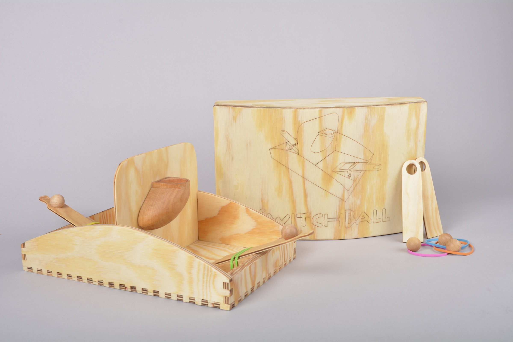
Project framing
The brief was to design a toy for my cousin using rubber bands and one additional material. I chose wood and made the elastic tension the product’s main interaction: players launch balls across a shared field.
This project covers the full loop from concept to context: framing a user need, testing mechanics, building a durable object and designing packaging that makes the game easy to understand and store.
01 / Sketches
Rapid sketching helped me compare different ways to turn spring tension into a clear, repeatable interaction. I selected the direction that balanced skill, competition and a compact footprint.
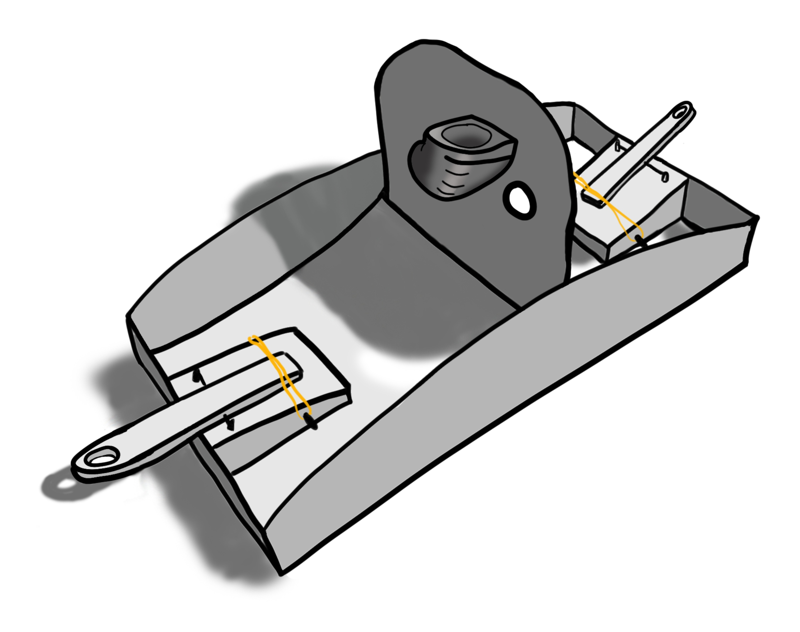
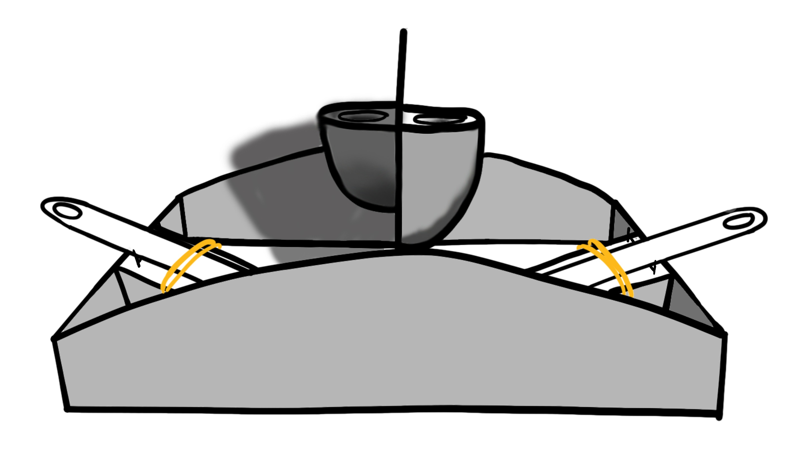
02 / Prototype
A rough prototype let me evaluate the game loop before committing to final dimensions and joinery.
The first model surfaced two risks: the catapult needed a reliable launch angle, and the hoop required openings through three axes. I treated those failures as design requirements for the next iteration, adjusting the geometry until the ball path and feedback were readable in play.
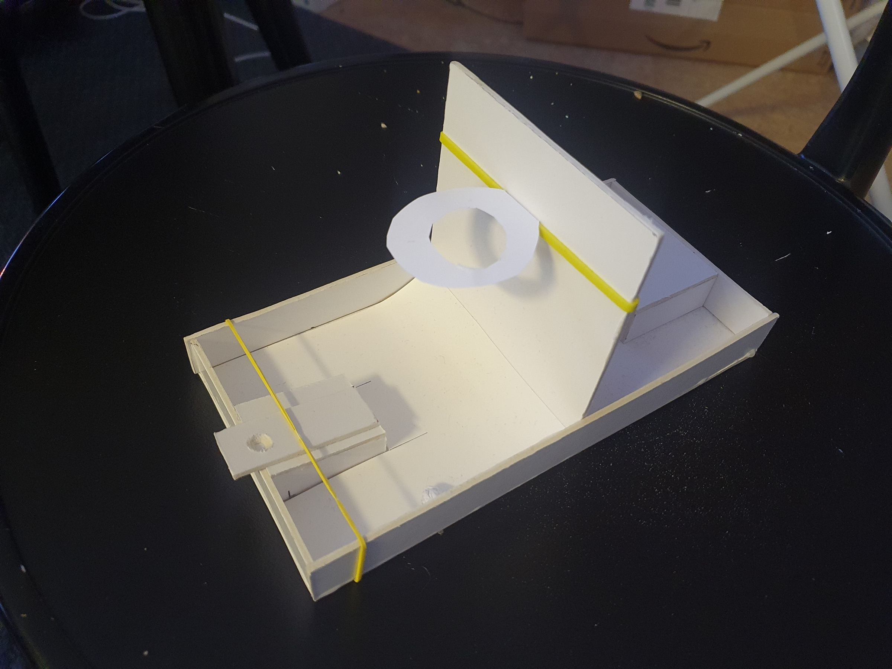
03 / Building
I translated the sketches into a buildable system of interlocking panels, sliding components and dowel-held details.
Box joints form the frame and keep assembly legible without glue. A tongue-and-groove centre board locks the two play areas together, while the carved launchers and hoops give the player a consistent grip and target.
The workshop process taught me to design for material behaviour, not just ideal geometry: joints had to tolerate plywood movement while still feeling precise in the hand.
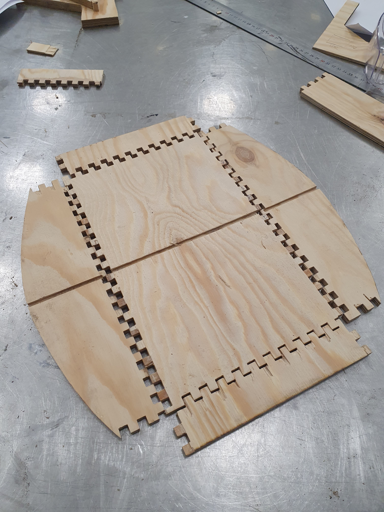
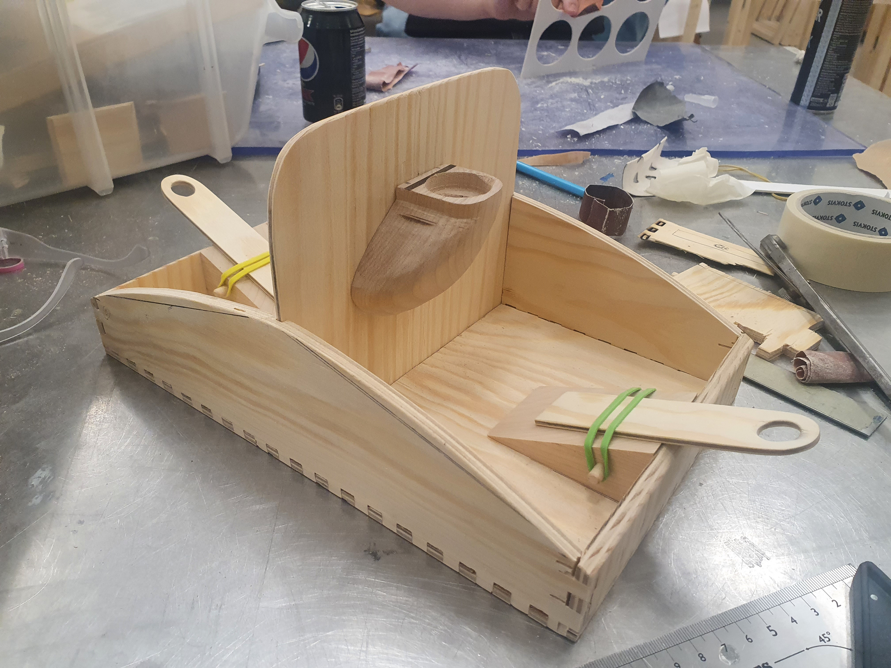
04 / Final product
The finished object makes the action visible: two launchers, one shared field and a constant exchange of balls.
The final prototype combines robust wooden parts with flexible rubber bands, so each shot feels physical and slightly unpredictable. The mirrored layout keeps both players equally involved and makes the game legible at a glance.
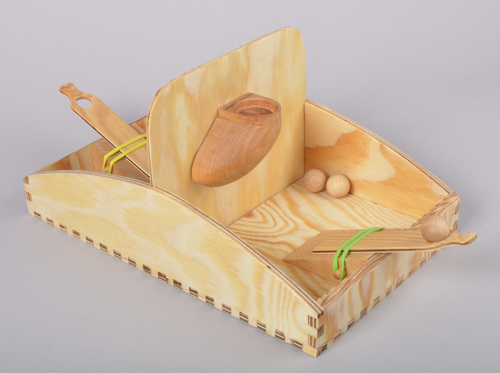
05 / How to play
Aim, launch, score and send the ball back. The rules stay simple so the focus remains on skill, timing and playful competition.
The objective
Start with equal balls. Each successful basket sends a ball to your opponent. The first player to clear their side wins.
The play loop
Load a launcher, choose your angle and release. The elastic mechanism makes every attempt tactile while leaving room for skill and improvisation.
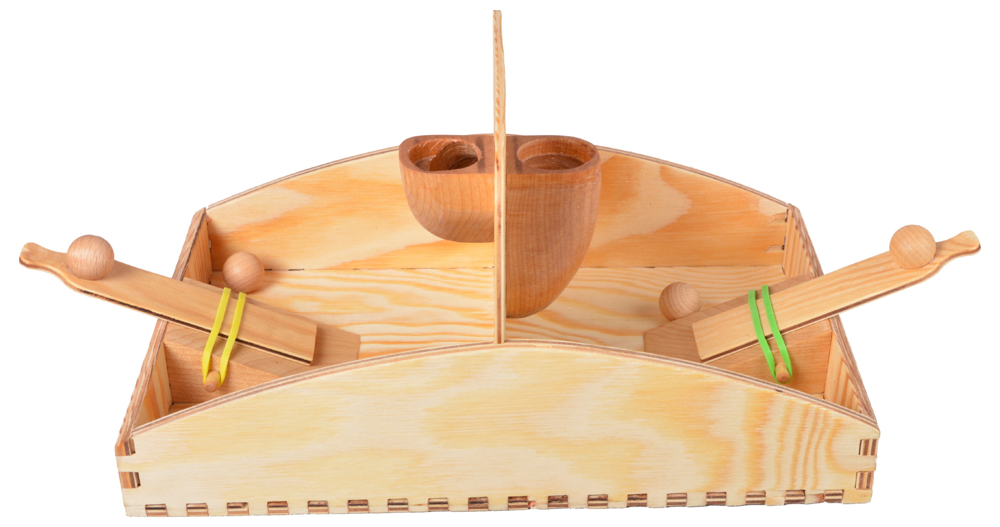
06 / Smart packaging
Packaging turns storage, setup and first play into one clear sequence.
The package is part of the product system, not a final wrapper. Every component has a defined place, so the game can be unpacked, assembled and returned to storage without loose parts.
Ready in four moves
Clear steps keep the transition from box to game short and intuitive.
When the game is over, reverse the sequence and the box becomes the product’s storage system again.
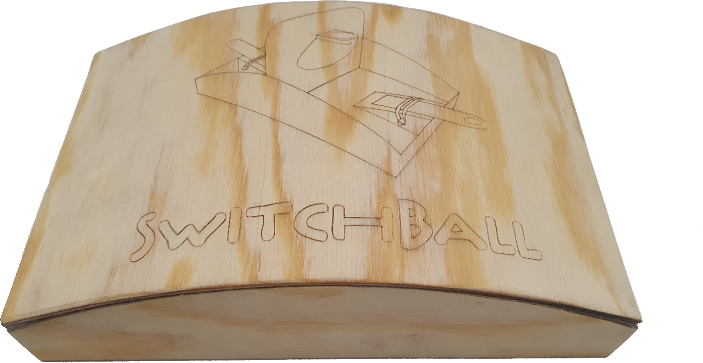
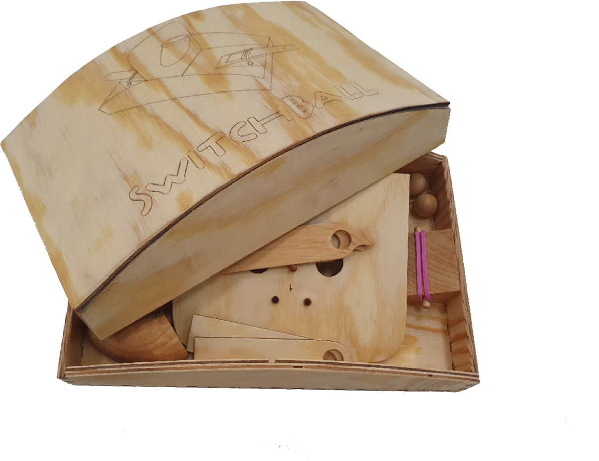
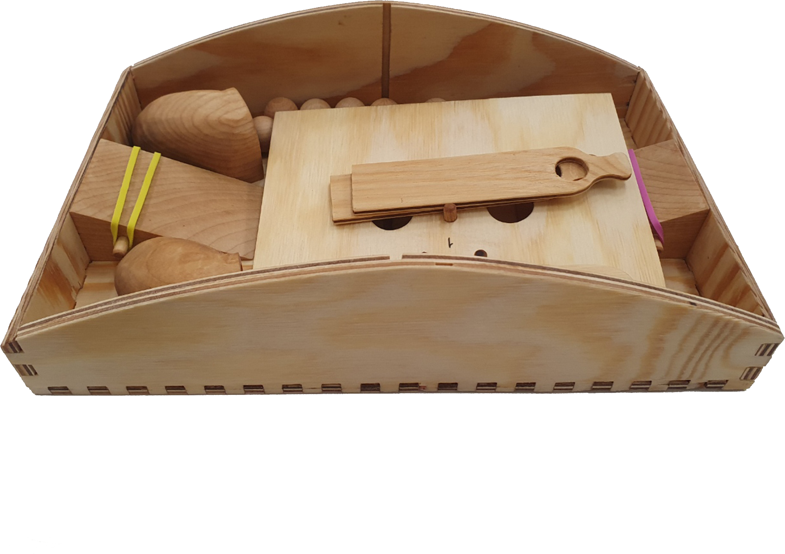
07 / Different scenarios
Context photography tests the product beyond the workshop: can it stay legible, inviting and playable in everyday spaces?
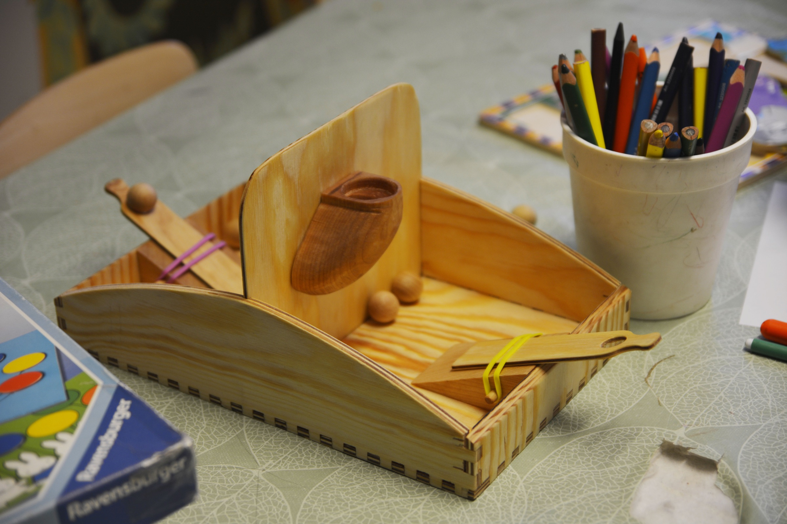
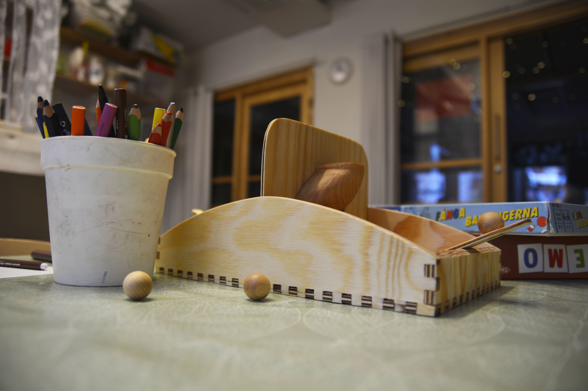
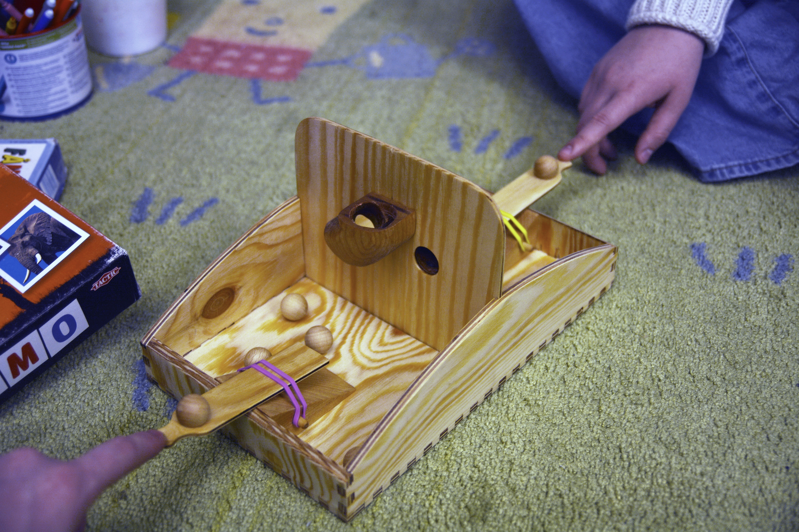

“The material constraints became a design tool. They gave the toy its structure, made every joint purposeful and turned a simple rubber band into the defining behaviour.”